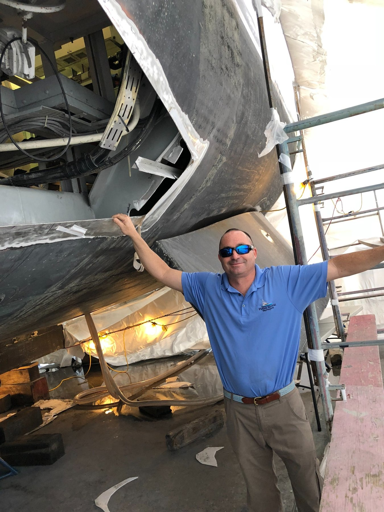
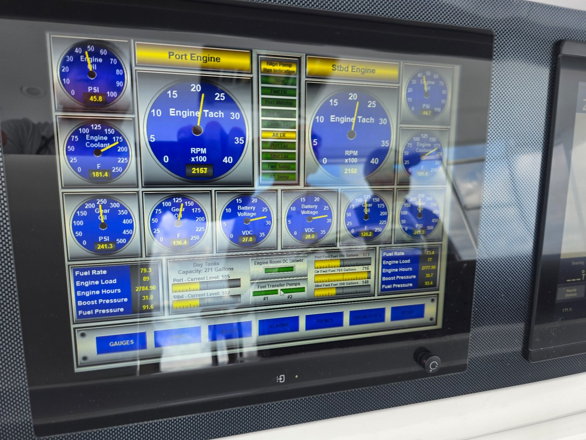

Professional marine surveying is about understanding the vessel as a whole—from structural condition and machinery to the systems people rely on every day. Here is what owners, buyers, and marine professionals should know.
A beautiful finish is only the beginning
Polished paint and carefully staged interiors can make a strong first impression. A survey looks beyond presentation to the accessible condition and operation of the vessel’s structure, systems, equipment, and safety arrangements. Findings should be evaluated according to significance, not simply counted.

Water intrusion and hidden consequences
Stains around windows, doors, hatches, or deck penetrations may point to past or active leaks. Cracks, softness, moisture indications, or unusual sounding responses can justify further investigation. None of these observations alone establishes the full extent or cause of damage; construction details and additional testing matter.
Blocked scuppers, heavy rain, and bilge capacity
Scuppers and deck drains are designed to direct water away from exposed areas. Leaves, debris, or poorly maintained drain paths can allow water to accumulate. If water reaches openings or enters the hull, bilge pumps may be unable to keep up. Float switches and alarms also need attention: an automatic pump is only useful if it has power, functions correctly, and has sufficient capacity for the situation.

The ordinary systems buyers actually use
Lights, stereo equipment, speakers, opening windows, doors, crew quarters, refrigeration, ice makers, wine chillers, laundry equipment, and plumbing are part of everyday ownership. Their operation can affect comfort, maintenance costs, and a buyer’s understanding of the vessel. Tests should be described accurately rather than implying that every component was exhaustively evaluated.
Fuel, oil, and hydraulic leaks
Evidence of diesel, engine oil, or hydraulic fluid in machinery spaces deserves attention. Fluid contamination in the bilge can create fire, equipment, environmental, and cleanup concerns. Overboard discharge of oily or fuel-contaminated water may violate applicable regulations; proper containment and disposal are essential.
Safety findings and priorities
Fire protection, navigation lights, alarms, emergency equipment, shore-power connections, hoses, seacocks, and structural concerns may carry different levels of urgency. A clear survey report helps separate higher-priority safety issues from maintenance items and cosmetic observations, while recommending specialists when needed.
What a finding does—and does not—mean
A survey documents accessible conditions at a particular time. It does not certify the absence of hidden defects, predict the remaining life of every component, or replace specialist tests. The most useful findings explain why an observation matters and what reasonable next step can clarify or correct it.
Inspection scope and testing depend on the vessel, access, operating conditions, safety, and the agreed survey services. Observations described here are educational and do not replace an inspection of a specific vessel.